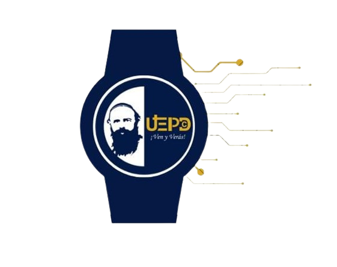

Secure Alert
Un dispositivo de seguridad personal para un mañana más seguro
El problema
En el mundo actual, la seguridad personal es un tema de gran preocupación. Con tasas de criminalidad en aumento y situaciones impredecibles, es esencial tener una solución confiable para asegurar nuestra seguridad y la de nuestros seres queridos.
"Guayaquil registra 1.867 asesinatos y una tasa de 67,97 homicidios por 100.000 habitantes" (García, 2024)
La solución
Secure Alert es un dispositivo wearable que combina tecnologías avanzadas para proporcionar una respuesta rápida y efectiva en situaciones de emergencia. Con dos botones, uno para enviar un mensaje con su ubicación y otro para realizar una llamada de 20 segundos a un contacto predeterminado, puede estar seguro de que la ayuda está solo a un clic de distancia.
- Tecnología GPS para rastreo de ubicación preciso
- Sistema GSM para comunicación rápida
- Arduino Nano para gestión eficiente de energía
Justificación de nuestro Proyecto
Este proyecto tiene la iniciativa de mejorar los conocimientos de la comunidad acerca de la implementación de la tecnología en distintos objetos, así como el uso de los mismos en diferentes situaciones, enfocándonos en una población altamente vulnerable debido al estado actual de inseguridad que atraviesa el país. Además, se busca promover el desarrollo de nuevos proyectos tecnológicos en las diversas instituciones de la ciudad de Guayaquil para el bienestar de sus habitantes. Secure Alert propone un diseño vanguardista y diferentes usos tomando en consideración las posibles necesidades de las personas en situaciones críticas, evaluando los objetivos propuestos y prometiendo ir más allá de una solución innovadora.
Objetivos
- Desarrollar un dispositivo portátil que proporcione una solución eficiente y práctica para situaciones de emergencia, combinando funciones de conectividad y seguridad.
- Diseñar e implementar un reloj inteligente que permita a los usuarios enviar mensajes de emergencia y realizar llamadas predeterminadas con la presión de un botón, asegurando una respuesta rápida en situaciones de riesgo.
- Integrar tecnologías de conectividad en el dispositivo para asegurar la transmisión eficiente y oportuna de alertas de emergencia.
- Capacitar a los usuarios sobre el uso adecuado del dispositivo y las mejores prácticas de seguridad.
Materiales utilizados
- Definición de términos básicos
- Sistema de Alerta
- GPS (Sistema de Posicionamiento Global)
- Sistema de Comunicación GSM
- Baquelita (Resina fenólica)
- Regulador de Voltaje LM2596
- Arduino Nano
- Módulo GPS NEO
- Módulo SIM800L
Información Adicional
En la actualidad, la preocupación por la seguridad personal es uno de los temas más abarcados en busca de una solución práctica y efectiva. Teniendo en conocimiento que "Guayaquil registra en lo que va del año 1.867 asesinatos y una tasa de 67,97 homicidios por 100.000 habitantes" (García, 2024), además de otro tipo de violencia íntegra, son situaciones impredecibles que pueden poner en riesgo nuestro bienestar y la de nuestros seres queridos. Sin embargo, la mayoría de personas frecuentemente se encuentran en la imposibilidad de comunicar una emergencia de forma rápida y efectiva. Este inconveniente se vuelve cada vez más preocupante para los ciudadanos, entre ellos destacando la seguridad de las personas mayores o aquellos que poseen condiciones especiales. Por lo tanto, la necesidad de un sistema confiable y fácil de usar que permita una comunicación rápida y efectiva en momentos de vulnerabilidad no solo se vuelve importante, sino vital para el ofrecimiento de una mayor seguridad y protección en nuestra vida diaria.